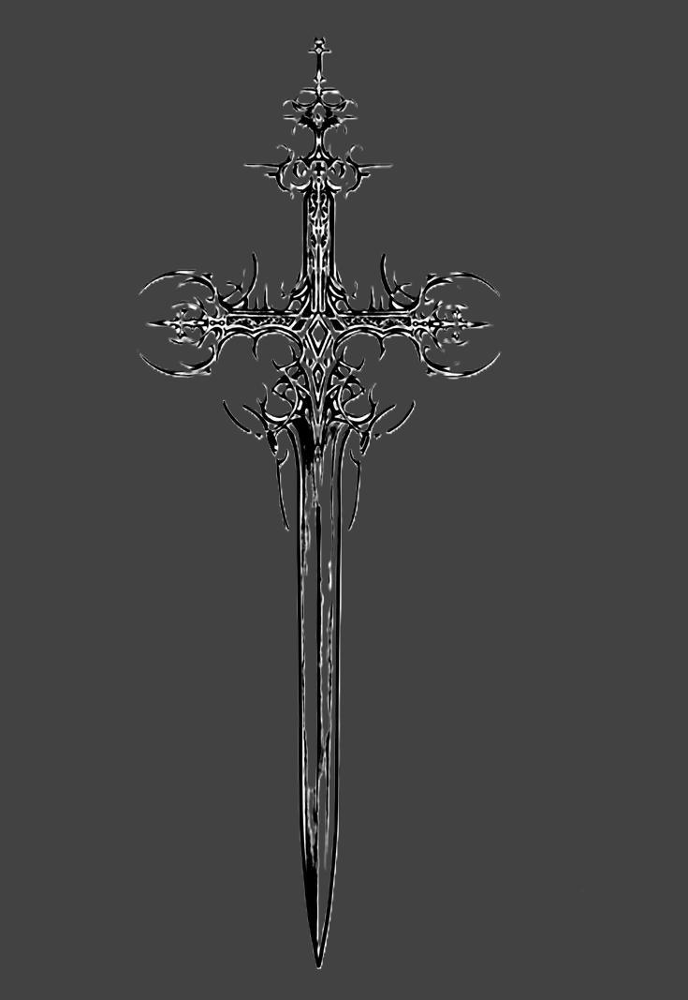

A thin moon faints in the sky overhead,
And dumb in the churchyard lie the dead.
Walk we not, Sweet, by garden ways,
Where the late rose hangs and the phlox delays,
But forth of the gate and down the road,
Past the church and the yews, to their dim abode.
For it’s turn of the year and All Souls’ night,
When the dead can hear and the dead have sight.
Fear not that sound like wind in the trees:
It is only their call that comes on the breeze;
Fear not the shudder that seems to pass:
It is only the tread of their feet on the grass;
Fear not the drip of the bough as you stoop:
It is only the touch of their hands that grope —
For the year’s on the turn, and it’s All Souls’ night,
When the dead can yearn and the dead can smite.